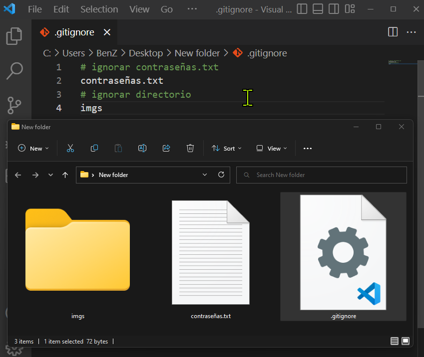

¿Cómo hacer para que Git ignore ciertos archivos?
A veces tendrás algún tipo de archivo que no quieres que Git añada automáticamente o siquiera aparezca como Untracked. Puede darse en casos que tengas archivos o directorios que contengan contraseñas u otra información que por alguna razón no necesites/quieras mostrar. En estos casos puedes crear un archivo llamado literalmente .gitignore con el punto incluido al principio para que liste patrones a considerar. Ahora si por ejemplo tenemos un archivo llamado "contraseñas.txt" podemos escribir exactamente el mismo nombre dentro del archivo .gitignore y lo ignorará completamente. Las líneas que comienzan con # se ignoran y actúan como comentarios. Hay muchísimos patrones más complejos que puedes usar. Por ejemplo, *.[oa] es para que ignore todos aquellos archivos que terminen con ".o" o ".a". Tienes una lista de patrones pre-armados en este link y si quieres profundizar más te recomiendo aprender sobre expresiones regulares.
